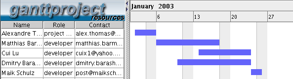

GanttProject - График на Ресурсите
За всички ресурси на паното се съставя график на ресурсите. На него е показано използването на времето на ресурсите по начин подобен на този при графиката на Гант.
По долу е показан пример за график на ресурсите:
